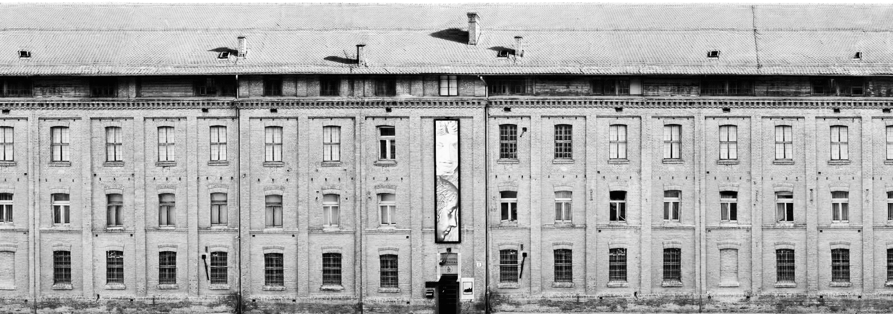

UNESCO monuments in the CASA Glyptotheque


About the Exhibition
This virtual exhibition brings together those UNESCO monuments from the World Cultural Heritage List the plaster casts of which are exhibited in the permanent display of the Croatian Academy of Sciences and Arts Glyptotheque. On show are exhibits, monuments or parts of them, from historical units and sites of the UNESCO-listed cultural heritage, pieces from the plaster cast collections of the Glyptotheque (the Collection of Plaster Casts of Fragments of the Croatian Cultural Heritage from the 9th to the 15th century, the Collection of Plaster Casts of Stechaks and the George the Dalmatian Collection). These individual monuments are used to present five out of the total of eight units of the cultural heritage from the UNESCO List.
By means of this exhibition, we would like to popularise the permanent display of the Glyptotheque through the theme of the UNESCO heritage. We would like to stress the value of the collection of plaster casts, which in a one-of-a-kind way bring together the most important monuments of the sculptural heritage placed in the UNESCO List.
The exhibition has been put on to mark International Museum Day 2019, and has been produced jointly by the Croatian Academy of Sciences and Arts Glyptotheque, the Croatian Studies Centre and the Graphic Arts Faculty of Zagreb University.
UNESCO and Croatia
UNESCO (the United Nations Educational, Scientific and Cultural Organization) is a United Nations agency that was founded in 1945 and has special care for intellectual and ethical issues in the realms of education, science and culture.
The UNESCO World Heritage List contains a total of 1092 monuments from 167 countries. A precondition for the entry of a site onto the List is the unique universal value of the cultural property and that it fulfils at least one of the ten criteria for entry. These criteria are described in the Operational Guidelines for the Implementation of the World Heritage Convention, which is the leading instrument for the management of the world heritage. The placing of cultural properties on the World Heritage List draws attention to the importance that the heritage has for the identity of the given nation and culture, as well as for humanity as a whole.
CROATIA has properties enrolled on the UNESCO World Heritage List according to the following categories:
- Cultural Heritage (8):
- the Historical Complex of Split and Diocletian's Palace, 1979; the Old City of Dubrovnik, 1979; the Historic City of Trogir, 1996; the Euphrasian Basilica, 1997; Šibenik Cathedral, 2000; Starigrad Plain on Hvar, 2008; Stechaks, 2016; Venetian Forts from the 15th to the 17th century: Stato da Terra and the western Stato da Mar in Šibenik and Zadar in 2017.
- Natural Heritage (2):
- Plitvice Lakes National Park, 1970; Ancient and Primeval Beech Forests in the Carpathians and Other Regions of Europe, 2017.
- Intangible World Heritage in Croatia (16):
- Bellmen of the Kastav Region; Croatian Lacemaking; Processions of the Queens (Ljelje) in Gorjani; the Procession of the Cross on Hvar; the Feast of St Blaise in Dubrovnik; the Production of Wooden Toys in Hrvatsko zagorje; Istrian Two-Part Singing and Playing on the Istrian Scale, 2009; the Alka of Sinj; Ojkanje – entered in the intangible cultural heritage list with the need for urgent safeguarding; the Gingerbread Making Tradition, 2010; Bećarac Folk Song; Nijemo [Mute] kolo, a circle dance from Zagora, 2011; Singing in a Klapa (a cappella) 2012; Mediterranean diet, 2013; Dry stone wall making; Međimurje Songs, 2018.
International collaboration between the Republic of Croatia and UNESCO is implemented within the purview of the Croatian UNESCO Commission, which works through the UNESCO Division in the Ministry of Culture of the Republic of Croatia.
The present virtual exhibition covers five of the eight units of the cultural heritage that are in the permanent displays of the Croatian Academy of Sciences and Arts Glyptotheque from the area of Croatia: the Historical Complex of Split and Diocletian's Palace; the Old City of Dubrovnik; the Historic City of Trogir; Šibenik Cathedral; Stechaks and one site (Radimlja) of Bosnia and Herzegovina.